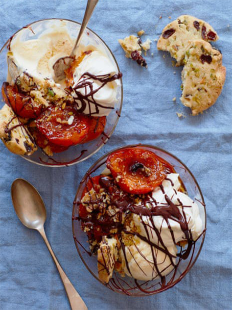

About Us
Join us to enjoy the delicious food of Sri Lanka.
Desserts

Drinks
Coffee
Traditional Meal

Join us to enjoy the delicious food of Sri Lanka.
Welcome to Ceylon Flavor, where we bring the rich and diverse flavors of Sri Lankan cuisine to your table. Our restaurant is dedicated to providing an authentic culinary experience that reflects the vibrant culture and traditions of Sri Lanka. At Ceylon Flavour, we use only the freshest ingredients and traditional recipes, passed down through generations, to create dishes that are both flavorful and healthy. Our skilled chefs are passionate about blending spices and herbs to give you an unforgettable taste of Sri Lanka. Whether you're craving classic rice and curry, savory hoppers, or exotic seafood specialties, we offer a wide range of dishes that cater to every palate. We take pride in offering a warm and welcoming atmosphere, perfect for family gatherings, friendly meet-ups, or intimate dinners.
OPEN HOURS
Monday - 9.00am-11.00pm
Tuesday - 9.00am-11.00pm
Wednesday - 9.00am-11.00pm
Thursday - 9.00am-11.00pm
Friday - 9.00am-12.00am
Saturday - 9.00am-12.00am
Sunday - 9.00am-12.00am